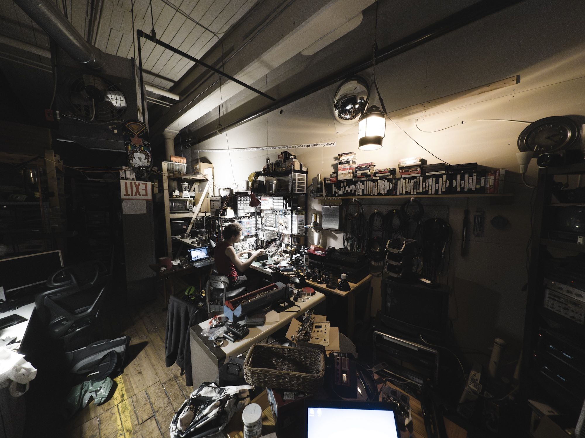

This site is hosted on Github and coded by hand with HTML, CSS, JS and BASH. The wiki is inspired by 100r and the XXIIVV wiki, which I have been following for many years. Some CSS and HTML styling elements are also inspired by Peter Blassers site, the Monome site, and my friend Enzo's server Funbox.sh. Shoutout to William Hazard for helping me setup this site, and to all my friends in providence and at cancelled.work for helping me with learning to code, especially Grief and Enzo. This site is meant to be pretty low level and run on most computers, however I prioritize image quality over anything else, so it might be slow loading images, trying to work on a seperate low level theme or port, for smaller systems. There are also more css animations on my site than xxiivv.
Hello from my terminal! This is the internal hyper meta magic portal for the site.
